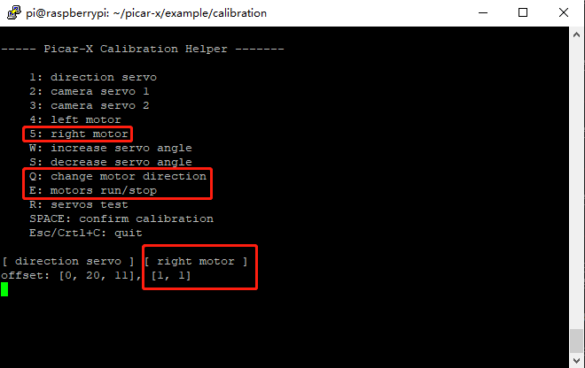

0. PiCar-Xの校正¶
モーターとサーボの校正¶
PiCar-Xの取り付け中やサーボ自体の限界により、サーボの角度が多少傾くことがあるため、校正が可能です。
もちろん、組み立てが完璧で校正が不要だと思われる場合は、この章をスキップしても構いません。
calibration.pyを実行します。cd ~/picar-x/example/calibration sudo python3 calibration.py
コードを実行すると、端末に以下のインターフェースが表示されます。

Rキーは、前輪の方向を制御するサーボが正常に動作し、損傷していないかどうかをテストするために使用されます。数字キー
1を押して前輪サーボを選択し、その後W/Sキーを押して前輪が左右に傾かずに可能な限り前を向くようにします。
数字キー
2を押して Pan servo を選択し、その後W/Sキーを押してパン/チルトプラットフォームが真っ直ぐ前を向き、左右に傾かないようにします。
数字キー
3を押して tilt servo を選択し、その後W/Sキーを押してパン/チルトプラットフォームが真っ直ぐ前を向き、上下に傾かないようにします。
取り付け中にモーターの配線が逆になっている可能性があるため、
Eを押して車が正常に前進できるかどうかをテストします。そうでない場合は、数字キー4と5を使用して左右のモーターを選択し、その後Qキーを押して回転方向を校正します。校正が完了したら、
Spacebarを押して校正パラメータを保存します。確認のためにyと入力するプロンプトが表示されたら、escを押してプログラムを終了し、校正を完了します。
グレースケールモジュールの校正¶
環境条件や照明状況の違いにより、グレースケールモジュールのプリセットパラメータが最適でない場合があります。 このプログラムを通じて設定を微調整し、より良い結果を得ることができます。
明るい色の床に約15cmの黒い電気テープを敷き、PiCar-Xをテープの上に乗せます。このセットアップでは、グレースケールモジュールの中央センサーがテープの真上に、両サイドのセンサーがより明るい表面の上に来るようにします。
grayscale_calibration.pyを実行します。cd ~/picar-x/example/calibration sudo python3 Grayscale.py
コードを実行すると、端末に以下のインターフェースが表示されます。

「Q」キーを押してグレースケール校正を開始します。するとPiCar-Xが左右に小さな動きをします。このプロセス中に、3つのセンサーがそれぞれ少なくとも一度は電気テープを横切るようにします。
また、「threshold value」セクションには3つのペアの大きく異なる値が表示され、一方で「line reference」にはそれぞれのペアの平均値となる2つの中間値が表示されます。

次に、PiCar-Xを宙に浮かせたり（または崖の端に置いたり）して「E」キーを押します。すると、「cliff reference」の値もそれに応じて更新されます。

すべての値が正確であることを確認したら、「space」キーを押してデータを保存します。その後、Ctrl+Cを押してプログラムを終了できます。